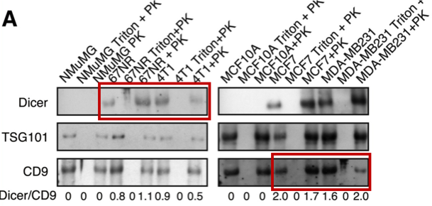

Potential Duplication in Figure 3B
Analysis
We compared the left and right panels of Figure 3B. After contrast normalization and rotation, several microfeatures appear identical, suggesting reuse. See overlays in the supplementary link.
- Similarity score (NCC): ~0.94
- Rotation alignment: 180°
Note: This post documents observations; readers should also examine the raw data.
Comments